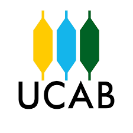

Sobre mí
Soy María Gabriela Alvarado, pero puedes decirme Gaby. Soy honesta, organizada, autodidacta, sociable, con buen sentido del humor, amigable y respetuosa. Amo trabajar en base a estrategia, ya que objetivos pequeños a corto plazo, serán el fruto a largo plazo.
Me encanta el desarrollo Full Stack, crear páginas web estáticas y dinámicas, diseño gráfico, estrategias de Marketing Digital y SEO. En mis tiempos libres toco el teclado, la guitarra, la flauta dulce y canto.
Mi red social favorita es instagram, y creo contenido de tecnología en @soygabydigital
Lo más destacado en formación complementaria
-
2020
¿Por qué ser un Freelancer
Dictado por: Axel Arias.
Duración: 72 horas académicas.
Certificada por: Consejero de la Facultad de Ciencias Económicas y Sociales. Br. Jonathan García.
Presidente del Centro de Estudiantes de la Escuela de Administración y Contaduría de la Universidad Central de Venezuela. Br. José Agustín.
Coordinador del Movimiento Visión de Género de la Universidad de Carabobo. Br. Arantza Salazar.
Consejero de Escuela de la la Facultad de Ciencias Económicas y Sociales. Br. José González. -
2020
Training de Oratoria
Dictado por: Director del Instituto de Oratoria de Valencia. Ender Oñate.
Duración: 13 horas académicas.
Certificada por: Director del Instituto de Oratoria de Valencia. Ender Oñate. -

2020
Curso de Formación en Liderazgo
Dictado por: Red Joven Venezuela y Universidad Católica Andrés Bello.
Duración: 72 horas académicas.
Certificada por: Red Joven Venezuela y Universidad Católica Andrés Bello. -

2021
Escritura Creativa
Agencia: Conextados.
Dictado por: Andrés Sandoval y Natalia Oliveros. Duración: 8 horas académicas.
Certificada por: Conextados. Andrés Sandoval - Natalia Oliveros. -
2022
Gestión de Proyectos con Metodologías Ágiles y Enfoques Lean
Dictado por: Fundación Telefónica Movistar - Conecta Empleo.
Duración: 40 horas académicas.
Certificada por: Gerente General de Fundación Telefónica Venezuela. Ana María Mancera. -
2022
Diseño Web con HTML5 + CSS
Dictado por: Fundación Telefónica Movistar - Conecta Empleo.
Duración: 30 horas académicas.
Certificada por: Gerente General de Fundación Telefónica Venezuela. Ana María Mancera. -
2022
Programación con JavaScript.
Dictado por: Fundación Telefónica Movistar - Conecta Empleo.
Duración: 40 horas académicas.
Certificada por: Gerente General de Fundación Telefónica Venezuela. Ana María Mancera. -
2022
Marketing Digital
Dictado por: Fundación Telefónica Movistar - Conecta Empleo.
Duración: 30 horas académicas.
Certificada por: Gerente General de Fundación Telefónica Venezuela. Ana María Mancera. -
2022
Analítica Web
Dictado por: Fundación Telefónica Movistar - Conecta Empleo.
Duración: 30 horas académicas.
Certificada por: Gerente General de Fundación Telefónica Venezuela. Ana María Mancera. -
2022
Curso Intensivo de Oratoria
Dictado por: Instituto de Comunicación y Oratoria de Valencia
Certificada por: Director. Ender Oñate. -
¡Y sigue
la
historia!